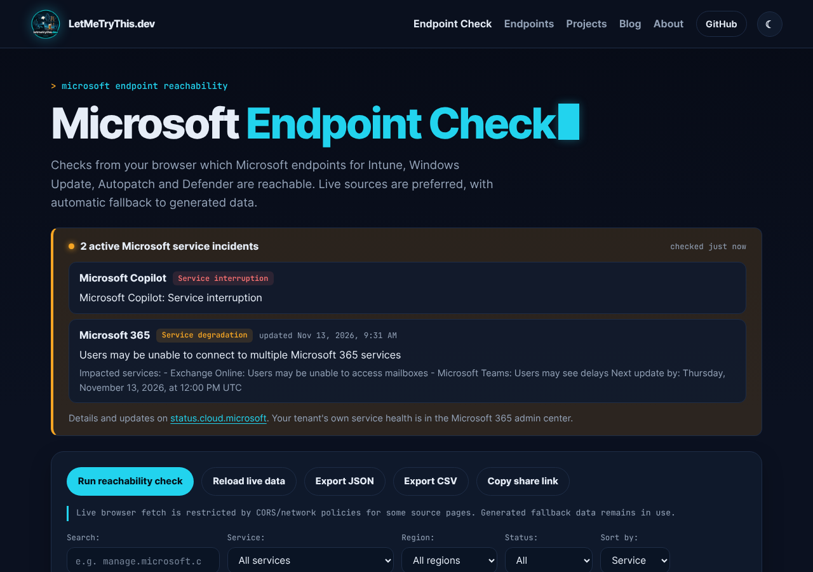
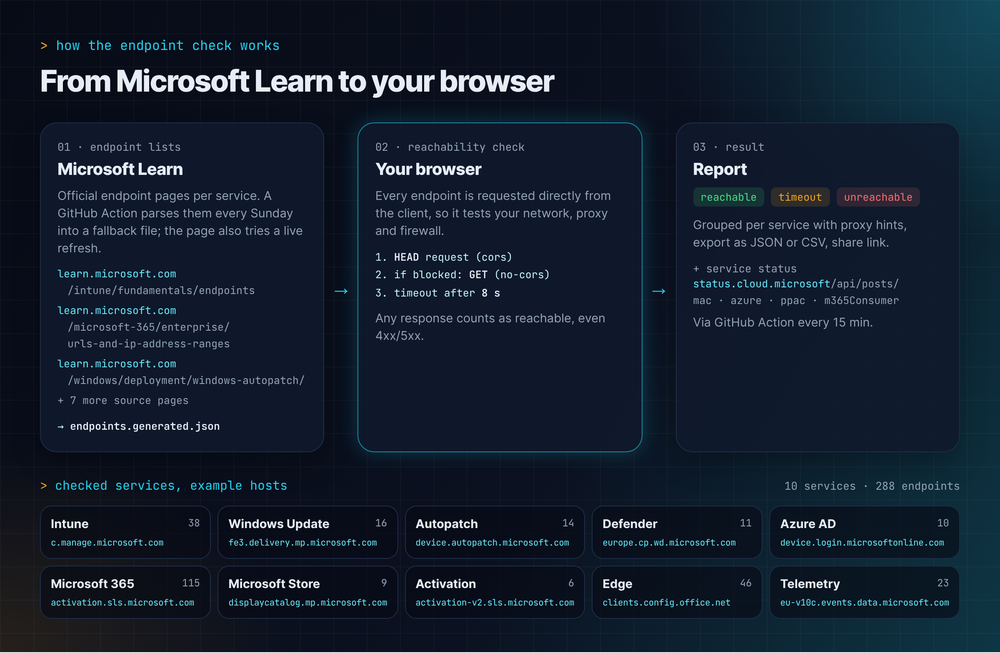
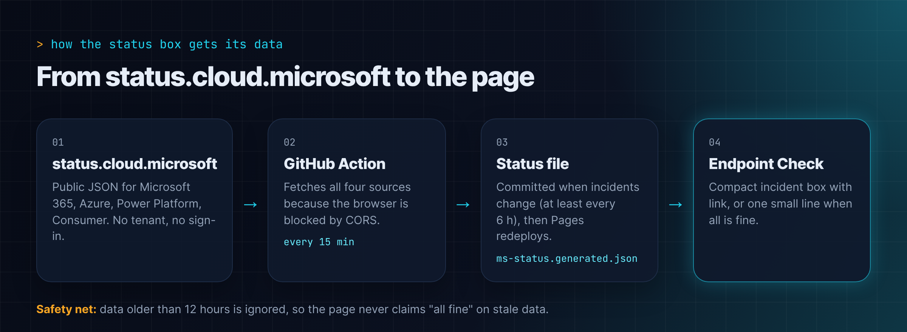

Microsoft 365 · GitHub Actions · 13. November 2026
Microsoft-Störung auf einen Blick
Manchmal passt das Timing einfach. Heute Vormittag habe ich ein Update für meinen Microsoft Endpoint Check live gestellt: Die Seite zeigt jetzt aktuelle Störungen von status.cloud.microsoft an. Und kaum war das Update online, stand dort auch schon etwas drin.
Microsoft 365 hatte heute eine größere Störung. Und genau dafür ist die neue Statusbox gedacht.

Was heute bei Microsoft los war
Laut der Statusdatei, die mein Repository um 11:24 Uhr (MEZ) von status.cloud.microsoft abgerufen hat, liefen zu dem Zeitpunkt zwei Incidents mit dem Status Service degradation:
- Microsoft 365 (Unternehmen): „Users may be unable to connect to multiple Microsoft 365 services“. Betroffen waren laut Microsoft Funktionen, die mit Exchange Online und den E-Mail-Diensten zusammenhängen. Teile der Dienste, die nicht von Exchange Online abhängen, funktionierten weiter.
- Microsoft 365 (Consumer): „Users may be unable to access or perform several actions in Microsoft 365 services“. Genannt wurden Outlook.com, OneDrive, OneNote, Microsoft To Do, Teams und Microsoft 365 im Web.
Zur Ursache hatte Microsoft bis dahin nichts Konkretes veröffentlicht. Im Consumer-Incident hieß es nur, man verfolge mehrere Arbeitsstränge, um die Quelle zu finden und die betroffene Umgebung wiederherzustellen. Ich spekuliere hier bewusst nicht weiter. Den aktuellen Stand gibt es direkt auf status.cloud.microsoft, und für den eigenen Tenant ist die Service Health im Microsoft 365 Admin Center die verlässlichere Quelle.
Warum das in den Endpoint Check gehört
Wer im Endpoint Management arbeitet, kennt die Situation: Outlook verbindet sich nicht, Teams hängt, ein Gerät synchronisiert nicht mit Intune. Die erste Frage lautet dann fast immer:
Liegt es am Client, am Netzwerk oder an Microsoft?
Der Endpoint Check beantwortet bisher den ersten Teil. Er prüft aus dem Browser heraus, welche Microsoft-Endpunkte für Intune, Windows Update, Autopatch und Defender erreichbar sind. Was fehlte, war der Blick auf die andere Seite. Wenn Microsoft gerade selbst eine Störung meldet, spart man sich eine Menge Fehlersuche am Client.
Deshalb steht diese Information jetzt direkt über dem Erreichbarkeitstest.
So funktioniert der Endpoint Check
Kurz zur Erinnerung, was die Seite eigentlich macht. Die Liste der Endpunkte stammt aus den offiziellen Microsoft-Learn-Seiten der jeweiligen Dienste, zum Beispiel Intune oder Microsoft 365. Eine GitHub Action liest diese Seiten jeden Sonntag aus und schreibt das Ergebnis nach web/data/endpoints.generated.json. Die Seite versucht zusätzlich, die Listen live zu aktualisieren, und fällt sonst auf diese Datei zurück.
Aktuell sind das 10 Dienste mit 288 Endpunkten, von Intune über Windows Update, Autopatch und Defender bis zu Microsoft 365, Edge und Windows Telemetry.

Getestet wird direkt aus dem Browser des Clients. Damit prüft die Seite genau das Netzwerk, den Proxy und die Firewall, hinter denen das Gerät tatsächlich hängt. Pro Endpunkt schickt sie zuerst eine HEAD-Anfrage und, wenn der Browser die blockiert, eine GET-Anfrage im no-cors-Modus. Nach 8 Sekunden gilt der Endpunkt als Timeout. Jede Antwort zählt als erreichbar, auch ein 403 oder 500, denn es geht um die Verbindung und nicht um den Inhalt. Am Ende stehen die Ergebnisse gruppiert pro Dienst, mit Proxy-Hinweisen und Export als JSON oder CSV.
Was neu ist
- Statusbox für Microsoft-Incidents: Gibt es aktive Störungen, zeigt die Seite eine kompakte Box mit Dienst, Status, Titel und einem Link zu status.cloud.microsoft. Ist alles in Ordnung, bleibt nur eine kleine Zeile stehen.
- Vier Quellen, kein Login: Die Daten stammen aus dem öffentlichen JSON hinter status.cloud.microsoft für Microsoft 365, Azure, Power Platform und Microsoft 365 Consumer. Es braucht weder einen Tenant noch eine Anmeldung.
- Neues Design: Die Seite nutzt jetzt dasselbe Design wie dieser Blog.
- Link-Vorschau: Wer den Link auf LinkedIn oder in Teams teilt, bekommt jetzt eine richtige Vorschau mit Bild.
Wie die Daten auf die Seite kommen
Eigentlich wollte ich den Status direkt im Browser abrufen. Das blockiert der Browser aber per CORS, weil status.cloud.microsoft keine Abrufe von fremden Seiten erlaubt. Bei einer statischen GitHub-Pages-Seite ohne eigenes Backend braucht es also einen Umweg.

Der Umweg ist eine GitHub Action namens „Update Microsoft service status“:
- Alle 15 Minuten ruft sie die vier öffentlichen Quellen ab.
- Das Ergebnis landet in der Datei
web/data/ms-status.generated.json. Committet wird nur, wenn sich die Incidents ändern oder der letzte Stand älter als 6 Stunden ist. - Danach baut GitHub Pages die Seite neu, und der Endpoint Check zeigt den neuen Stand.
Ein Detail war mir dabei besonders wichtig: Daten, die älter als 12 Stunden sind, ignoriert die Seite. Fällt die Action einmal aus, soll die Seite nicht fröhlich „alles in Ordnung“ melden, während Microsoft gerade Probleme hat. Lieber keine Aussage als eine falsche.
Was die Box nicht ist
Die Statusbox ersetzt nicht die Service Health im Microsoft 365 Admin Center. Sie zeigt nur, was Microsoft öffentlich meldet, und weiß nichts über den eigenen Tenant. Außerdem kann sie durch das 15-Minuten-Intervall und das Neubauen der Seite ein paar Minuten hinterherhinken.
Für die schnelle Frage „Ist das gerade ein Microsoft-Problem?“ reicht sie aber. Und genau diese Frage stellt man sich im Support-Alltag öfter, als einem lieb ist.
Der Code liegt wie immer offen auf GitHub. Feedback und Issues sind willkommen.